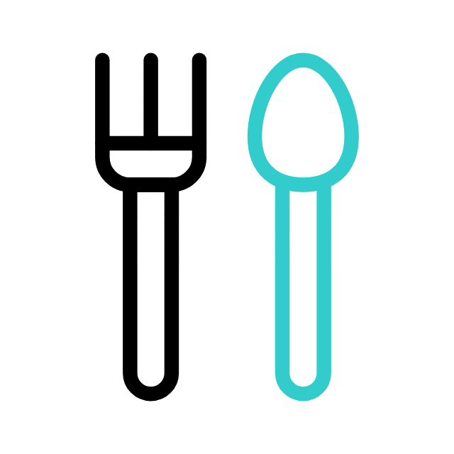
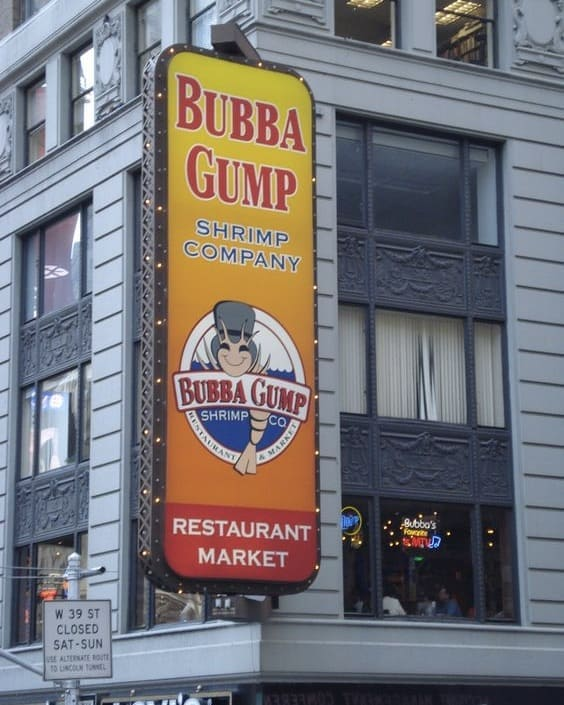
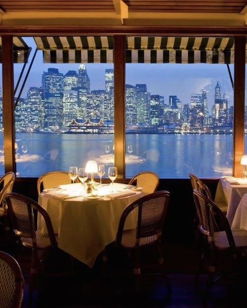
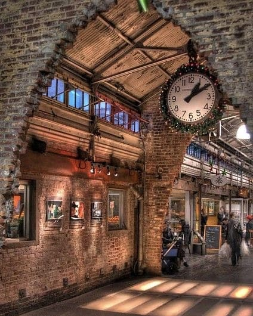
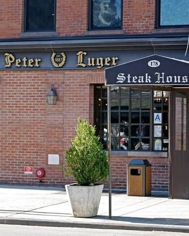
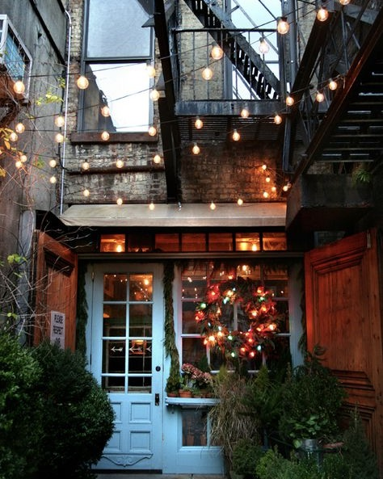
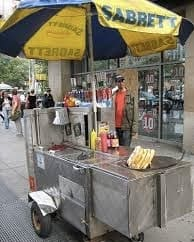

As we know New York has a huge choice of places to eat, you are spoiled for choice! That is precisely why I have struggled for you by finding the best Instagrammable and must-visit restaurants for you to enjoy a Big Apple-proof dinner!

Nathan's is the most famous hot dog in the world, with restaurants across the globe, products in every supermarket in America and millions of fans.

Capturing the magic that made "Forrest Gump" an American classic, Bubba Gump Shrimp Co. is a small chain of seafood restaurants committed to providing a casual environment where everyone can enjoy a great meal and have some fun too.

The River Cafe has been, and still is, the most exclusive fine dining American restaurant on the water in NYC, since 1977.Located in one of New York’s most noteworthy and romantic settings, and is well known around the world as a wonderful culinary destination.

Chelsea Market, located in the heart of New York City's Meatpacking District, is a food and retail marketplace with a global perspective...

Opened in 1887 in Williamsburg, this is one of New York's most iconic places to eat meat. The quintessential steakhouse in the Big Apple, where you can enjoy prime cuts of meat in a distinctly quaint setting.

On Manhattan's Lower East Side a small dead-end alley that is a side street of Bowery Street, there is a little blue door with lots of little lights. It is the entrance to one of the Big Apple's coolest and most Instagrammed venues.

Hot dog carts are mobile stands popular in NY and equipped with tools and stoves specifically used to prepare hot dogs to be served on the spot to passersby.

It is perhaps among the most quoted restaurants in New York where you absolutely must get a full plate of pastrami, you'll be hard pressed to find a better one in the city!